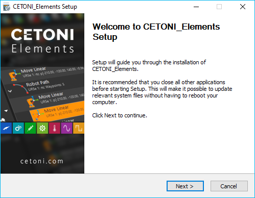
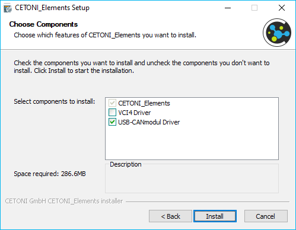

1. Installation
1.1. Installing the Software
Important
In order not to impair time-critical control processes of the CETONI Elements software, no other computation-intensive applications should be executed on the controller PC.
Important
Install the CETONI Elements software + device drivers before connecting your device via USB to the PC.
Attention
Danger of malfunction / data loss due to standby / sleep mode. Switch off the activation of the standby / sleep mode on your PC or notebook to avoid a malfunction of the hardware driver.
Attention
Risk of malfunction / data loss due to power saving option. Always operate your PC or notebook in mains operation and deactivate selective USB power saving to avoid malfunctioning of the hardware driver.
To install the software, insert the CETONI Elements CD ROM into your CD/DVD drive, or plug the CETONI Elements USB stick into a free USB port. Then start the file CETONI_Elements_Setup.exe from the CD or USB stick. The Installation Wizard then leads you through the installation of the CETONI Elements software and the hardware drivers.
Important
Under Windows, you need to be logged in with administrator rights in order to be able to install the hardware drivers.
The Installation Wizard now leads you through the installation of the software.
The hardware device drivers are installed during the installation. This step is only required if the drivers are not already installed on your computer. If the hardware drivers are already installed, please deactivate the driver components (Figure below).
1.2. System Requirements
Your computer should meet the following system requirements in order to be able to use the software:
PC with an Intel Core i3 processor (or higher) - minimum 1.3 GHz (Most processors produced in 2015 and later should work well with this software)
at least 8 GB RAM (recommended 16 GByte).
free hard disk space of approx. 400 MByte
at least 2 free USB (2.0 or 3.0) interfaces
Operating system: Windows 10 / 11 64-bit (Windows 7 and Windows 8 may work, but are not tested)
Monitor resolution: 1920 X 1080 (HD) or higher
wheel mouse
Standby or sleep mode must be deactivated under Windows when the software is used, because activation of the standby or sleep mode can lead to malfunctions of the hardware device driver.
Attention
Danger of malfunction / data loss due to standby / sleep mode. Switch off the activation of the standby / sleep mode on your PC or notebook to avoid a malfunction of the hardware driver.
To avoid disconnections from the device, please disable selective power saving for USB ports in the power options:

1.3. Installing USB Device Drivers
The USB device drivers are required for the USB connection to your device. When you connect your device to your PC via USB for the first time or connect the device some time later to another USB slot, Windows starts the Hardware Wizard automatically, this detects a new USB device and installs the requisite drivers if you have previously installed the CETONI Elements software from CD or USB stick.
Important
The installation procedure for the device drivers can vary slightly depending on the Windows version used.
Important
Danger of data loss as a result of uncontrolled switch off procedures! Always close the software before you switch off your device! Only then are all settings saved correctly, and the configuration data will not be lost.
Tip
If your driver is not working properly after installation, you can download and reinstall it from the drivers section of the CETONI Downloads page.